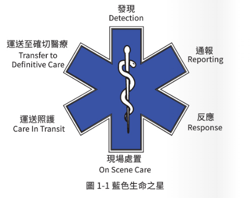

P.6 - P.9
臺灣緊急醫療救護體系概論
本章節將帶領您瞭解 EMS 的起源、學習目標，以及認識代表緊急救護精神的「藍色生命之星」。
🎯 本章學習目標
- ☑瞭解緊急醫療救護的沿革與國際現況
- ☑簡介緊急醫療救護相關的法規
- ☑瞭解救護技術員在法規中的資格、職責、得施行項目與罰則
- ☑認識救護技術員之角色及職責
- ☑落實醫學倫理與病人隱私權保護
🌍 EMS 的世界起源
拿破崙軍隊 (1792-1797)
現代 EMS 概念來自「軍陣醫學」。拿破崙軍隊外科醫師拉瑞 (Larrey) 發展了「飛速救護車系統」，能在短時間內運送傷兵，為現代戰野醫療的雛形。
美國 (1968-1973)
1968 年急診醫學會成立；1973 年頒布《緊急醫療救護體系法 (EMS Act)》，明定消防單位負責運送受傷病人。
臺灣 (民國 84 年)
臺灣發展較晚，於民國 84 年制定《緊急醫療救護法》，並於消防法中將緊急救護列為消防三大任務之一。

⭐放置課本圖 1-1
於 assets/img/img-1-1.png
'">
於 assets/img/img-1-1.png
藍色生命之星
Star of Life (請對照課本圖 1-1)
由美國 R. 史瓦茲 (Leo R. Schwartz) 命名，中間的蛇杖代表希臘神話神醫亞斯古尼克 (Asclepius)。這六角星的每一個角，代表著緊急醫療救護服務的「六大程序」，順時針方向依序為：
1
發現 (Detection)
2
通報 (Reporting)
3
反應/出勤 (Response)
4
現場處置 (On Scene)
5
運送照護 (In Transit)
6
確切醫療 (Definitive)